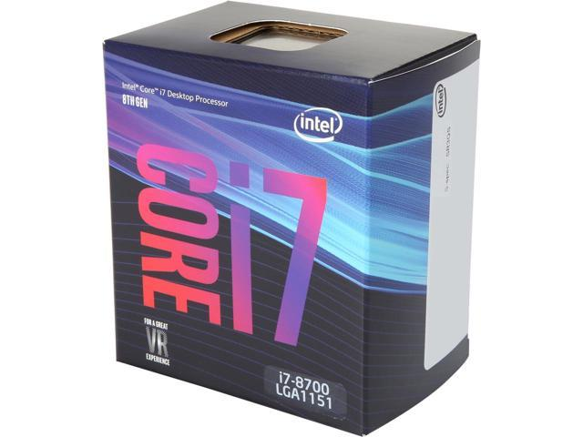

1.XÁC ĐỊNH MỤC ĐÍCH SỬ DỤNG
Nếu bạn là người có tiền, bạn là người có rất nhiều tiền, bạn là con thủ tướng chính phủ hay bạn kiếm tiền hàng trăm tỉ bằng công việc ăn cắp bất lương thì có lẽ là bạn sẽ không nên đọc bài viết này, đáng ra đoạn này phải ở đoạn giới thiệu mới đúng, nhưng đã xác định bạn là một người chi tiêu khoa học, bạn đầu tư xứng đáng cho dàn PC của mình nhưng không muốn bị đầu tư một cách thái quá thì nghe này, hãy build một cấu hình thật phù hợp với nhu cầu của bạn! Trước khi lên một trang web để kiếm một cấu hình thì bạn sẽ cần biết mục đích sử dụng của mình là gì, dễ thôi mà, bạn có thể làm việc văn phòng, có thể làm đồ họa, lập trình, hoặc chơi game esport, chơi những tựa game offline mới ra lò còn nóng hổi,... hay có thể một vài trong số những mục đích trên, thì đó chính là bước đầu tiên chúng ta cần làm để định hình nên cấu hình cỗ máy của mình!
2.XÁC ĐỊNH KHOẢNG ĐẦU TƯ PHù HỢP
Nếu bạn là người có tiền, bạn là người có rất nhiều tiền, bạn là con thủ tướng chính phủ hay bạn kiếm tiền hàng trăm tỉ bằng công việc ăn cắp bất lương thì có lẽ là bạn sẽ không nên đọc bài viết này, đáng ra đoạn này phải ở đoạn giới thiệu mới đúng, nhưng đã xác định bạn là một người chi tiêu khoa học, bạn đầu tư xứng đáng cho dàn PC của mình nhưng không muốn bị đầu tư một cách thái quá thì nghe này, hãy build một cấu hình thật phù hợp với nhu cầu của bạn! Trước khi lên một trang web để kiếm một cấu hình thì bạn sẽ cần biết mục đích sử dụng của mình là gì, dễ thôi mà, bạn có thể làm việc văn phòng, có thể làm đồ họa, lập trình, hoặc chơi game esport, chơi những tựa game offline mới ra lò còn nóng hổi,... hay có thể một vài trong số những mục đích trên, thì đó chính là bước đầu tiên chúng ta cần làm để định hình nên cấu hình cỗ máy của mình!
3.BUILD CẤU HÌNH
Giờ là bước khoai nhất, bạn đang bắt đầu chọn ra các linh kiện, bắt đầu cân đo đong đếm các thành phần, so sánh giá các nơi, rồi so sánh hiệu năng các linh kiện...
Và ở đây có 1 số cẩm nang cho anh em này:
-
Không nên chọn một thành phần nào quá thừa thãi hiệu năng: (như 16gb ram trong khi chỉ dùng chưa đến 8gb, i7 8700 thay vì i5 8400 khi bạn chỉ chơi CSGO mà không làm gì nhiều hơn, nguồn 650W để lắp cho 1 bộ PC k ăn đến quá 300W điện,... ) – những sai lầm này cũng chẳng ảnh hưởng gì đến sự ổn định của PC cho lắm, nhưng mà sẽ khiến cho bạn phải ăn mì tôm lâu lâu thay vì những bữa cơm đầy đủ dinh dưỡng :v.
-
Chọn CPU: Tùy vào công việc bạn làm, cpu thường sẽ là linh kiện mà bạn sẽ lựa chọn đầu tiên! Mình không nói về các máy server cao cấp mà chỉ xoay quanh 2 dòng là intel core i và AMD Ryzen thôi! Theo kinh nghiệm của mình thì intel sẽ có sức mạnh đơn nhân cao và khá ổn định, cũng như có thể chạy bền bỉ cả ngày trong khi AMD đang dần tốt lên qua từng thế hệ nhưng thế hệ 2 của nó chưa thực sự tối ưu cho game, nhưng lại rất hời về khoản đa nhiệm, nói chung bạn muốn livestream thì build ryzen cho ngon, còn chỉ chơi và try hard thì cứ intel core i3, i5 mà tương thôi, giá hiện tại 2 dòng cpu này là rất rẻ rồi và main đi kèm cũng chỉ 1tr350k trở lên là chạy ngọt rồi! Ầy... Nói chung các bác phải tham khảo con cpu nào là đáp ứng tốt cho công việc của mình!

-
Chọn main: Main theo CPU, ngoài ra thì có những yếu tố như các chức năng tích hợp như wifi tích hợp, âm thanh,... và thẩm mĩ nữa! Nhưng yếu tố quan trọng là main phải đáp ứng được hiệu năng của CPU và các thành phần như ram, ssd nữa.
-
Ổ cứng: 2020 rồi, không mua ssd nvme thì cũng làm con ssd sata, chứ cài win vào hdd thì chán lắm anh em ạ! Load game thì ssd nvme > ssd sata > hdd, tất nhiên là những game nặng rồi! Và nếu try hard các game như csgo thì load bằng ssd sẽ được vào warm up sớm hơn :v
-
Chọn bộ nguồn: bộ nguồn nên là nguồn đạt chuẩn 80plus, ít ra thì nó cũng là thứ gánh gồng các thành phần khác và cần đảm bảo các thành phần khác luôn được cấp đủ điện cũng như nguồn điện vào đều đặn, nguồn rởm là đi cả case đấy chứ đùa@@
-
Ram: Đủ dùng k thừa thãi quá là được, buss cũng k quá quan trọng đâu, k chênh nhau về hiệu năng chơi game nên khỏi băn khoăn nha!
-
VGA: Nếu bạn là game thủ thì đây mới là món linh kiện thứ yếu, hãy chọn chiếc VGA cân được game mà bạn muốn chơi nhé, nếu là lol thì build với Ryzen dòng G là ok chứ k cần vga rời đâu, nhưng để try hard thì khác nhé, dư dư cho nó sướng, nhưng vẫn là tùy thuộc vào kinh tế của bạn nữa! Nếu như mục đích build máy chỉ để chơi và chơi, thì chọn vga trước cpu và các thành phần khác là hợp lý hơn!
-
Vỏ case: Quan trọng đấy, 1 cái vỏ có thể cùng bạn vượt qua nhiều lần nâng cấp PC mà chẳng phải thay nếu lần đầu bạn chọn 1 chiếc vỏ có kích thước đủ lớn, thông thoáng và có thẩm mĩ hợp gu bạn nhất!
4.NHỮNG SAI LẦM kHÁC
Mới tập build PC anh em sẽ có rất nhiều những câu hỏi, cũng như rất nhiều cái sai ngớ ngẩn như main intel đi với cpu amd, main intel đời 23(H61, H71, B65, B75, Z67, Z77) lắp cpu intel đời 4( G18xx, G3xxx, I3 4xxx, i5 4xxx, i7 4xxx), main intel đời 7(H110, B250, H270, Z270) lắp ram ddr3,... cũng như tin vào những nghẽn thủ, xung thủ =))), nếu chưa chắc mọi người hoàn toàn có thể lên các group chợ PC và hỏi người ta về cấu hình các bác build đã hợp lý chưa, những cuộc thảo luận có thể đem lại rất nhiều kiến thức!

5.LỜI KẾT
Chúc các bác build được dàn PC hợp ý nhất có thể phục vụ các nhu cầu của tất cả các bác! Cảm ơn đã đọc bài viết này, e vừa nhắn tin vs gấu nên viết hơn ngáo tí nhưng mà cũng là những gì mà e muốn chia sẻ rồi, cái này thì k cần biết build cũng đc, cứ ib em là em tư vấn cho ngay dàn hợp lý nhất!